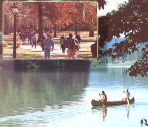

MAP BY DON OSBY
[1] ""I always wanted to form,"" says Rick Duff, who produces honey, maple syrup, beef, lamb and vegetables on 140 acres.[2] Chimes ring out regularly from OU's venerable former Hall, the oldest college building west of the Alleghenies. [3] Quiet moments come easy. [4] Roxanne Graff (top) with follow county commissioner Dom Kohler and former commissioner Karen Harvey.[5] Becky McCutcheon (shown here with her father).[6] Albany's Clara and Albert Hutchison, and employee. [7] ""I love this place,"" says Tom O'Grady, county recycling program manager